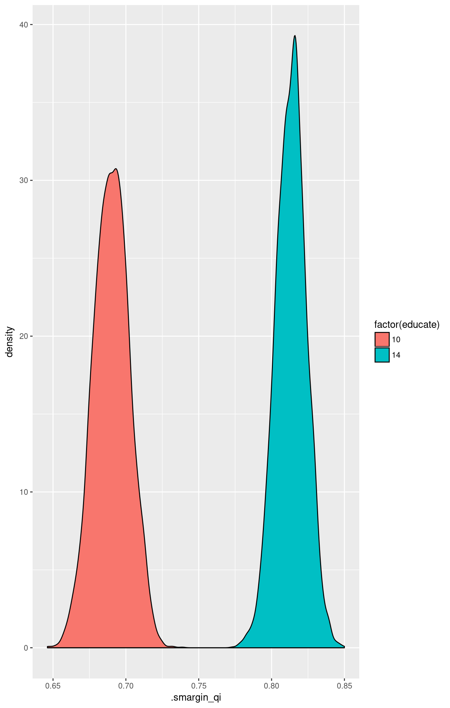

Expected Values for GLMs
2017-11-16
Examples
Basic example
Attach the sample turnout dataset:
data(turnout, package = "Zelig")Estimating parameter values for the logistic regression:
m1 <- glm(vote ~ age + race, family = binomial(link = "logit"), data = turnout)Summarize estimated parameters:
summary(m1)##
## Call:
## glm(formula = vote ~ age + race, family = binomial(link = "logit"),
## data = turnout)
##
## Deviance Residuals:
## Min 1Q Median 3Q Max
## -1.9268 -1.2962 0.7072 0.7766 1.0723
##
## Coefficients:
## Estimate Std. Error z value Pr(>|z|)
## (Intercept) 0.038365 0.176920 0.217 0.828325
## age 0.011263 0.003053 3.689 0.000225 ***
## racewhite 0.645551 0.134482 4.800 1.58e-06 ***
## ---
## Signif. codes: 0 '***' 0.001 '**' 0.01 '*' 0.05 '.' 0.1 ' ' 1
##
## (Dispersion parameter for binomial family taken to be 1)
##
## Null deviance: 2266.7 on 1999 degrees of freedom
## Residual deviance: 2228.8 on 1997 degrees of freedom
## AIC: 2234.8
##
## Number of Fisher Scoring iterations: 4For logit models you may wish to calculate odds ratios:
cbind(OR = exp(coef(m1)), exp(confint(m1)))## Waiting for profiling to be done...## OR 2.5 % 97.5 %
## (Intercept) 1.039111 0.7347714 1.470780
## age 1.011327 1.0053346 1.017445
## racewhite 1.907038 1.4622538 2.478341Set values for the explanatory variables and simulate quantities of interest from the posterior distribution:
library(smargins)
summary(m.sm)## age race mean sd median lower_2.5 upper_97.5
## 1 36 white 0.6088009 0.02958366 0.6089339 0.5507803 0.6658784Show the results graphically:
library(ggplot2)

First differences
Estimating the risk difference (and risk ratio) between low education (25th percentile) and high education (75th percentile) while all the other variables averaged over their observed values.
m2 <- glm(vote ~ educate, data = turnout, family = binomial(link = "logit"))
summary(m2.sm)## educate mean sd median lower_2.5 upper_97.5
## 1 10 0.6899907 0.01232601 0.6900538 0.6653420 0.7143156
## 2 14 0.8134005 0.01038978 0.8136680 0.7923793 0.8334712## educate mean sd median lower_2.5 upper_97.5
## 1 10 vs 14 -0.1234099 0.01184295 -0.1234884 -0.1463416 -0.1001446


Model Definition
Let \(Y_i\) be the binary dependent variable for observation \(i\) which takes the value of either 0 or 1.
- The stochastic component is given by
\[\begin{aligned} Y_i &\sim& \textrm{Bernoulli}(y_i \mid \pi_i) \\ &=& \pi_i^{y_i} (1-\pi_i)^{1-y_i}\end{aligned} \]
where \(\pi_i=\Pr(Y_i=1)\).
- The systematic component is given by:
\[\pi_i \; = \; \frac{1}{1 + \exp(-x_i \beta)}.\]
where \(x_i\) is the vector of \(k\) explanatory variables for observation \(i\) and \(\beta\) is the vector of coefficients.
Quantities of Interest
- The expected values for the logit model are simulations of the predicted probability of a success:
\[ E(Y) = \pi_i= \frac{1}{1 + \exp(-x_i \beta)}, \]
given draws of \(\beta\) from its sampling distribution.
The predicted values are draws from the Binomial distribution with mean equal to the simulated expected value \(\pi_i\).
The first difference for the logit model is defined as
\[\textrm{FD} = \Pr(Y = 1 \mid x_1) - \Pr(Y = 1 \mid x).\]
The risk ratio is defined as
\[\textrm{RR} = \Pr(Y = 1 \mid x_1) \ / \ \Pr(Y = 1 \mid x).\]
In conditional prediction models, the average expected treatment effect (att.ev) for the treatment group is
\[ \frac{1}{\sum_{i=1}^n t_i}\sum_{i:t_i=1}^n \left\{ Y_i(t_i=1) - E[Y_i(t_i=0)] \right\}, \]
where \(t_i\) is a binary explanatory variable defining the treatment (\(t_i=1\)) and control (\(t_i=0\)) groups. Variation in the simulations are due to uncertainty in simulating \(E[Y_i(t_i=0)]\), the counterfactual expected value of \(Y_i\) for observations in the treatment group, under the assumption that everything stays the same except that the treatment indicator is switched to \(t_i=0\).
- In conditional prediction models, the average predicted treatment effect (att.pr) for the treatment group is
\[ \frac{1}{\sum_{i=1}^n t_i}\sum_{i:t_i=1}^n \left\{ Y_i(t_i=1) - \widehat{Y_i(t_i=0)}\right\}, \]
where \(t_i\) is a binary explanatory variable defining the treatment (\(t_i=1\)) and control (\(t_i=0\)) groups. Variation in the simulations are due to uncertainty in simulating \(\widehat{Y_i(t_i=0)}\), the counterfactual predicted value of \(Y_i\) for observations in the treatment group, under the assumption that everything stays the same except that the treatment indicator is switched to \(t_i=0\).